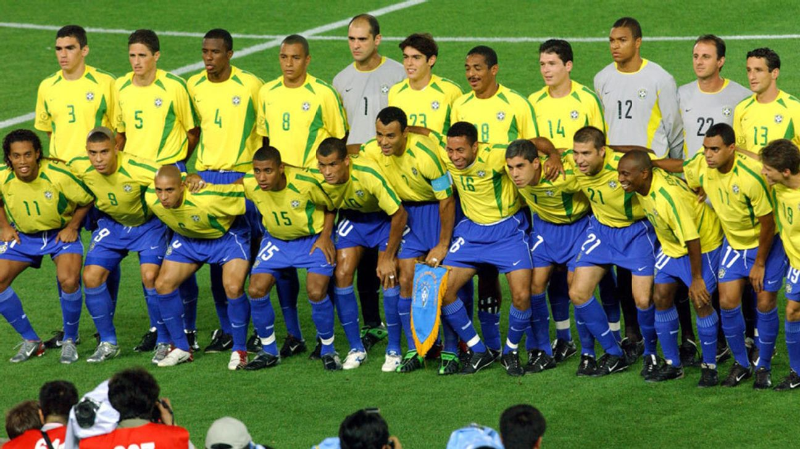
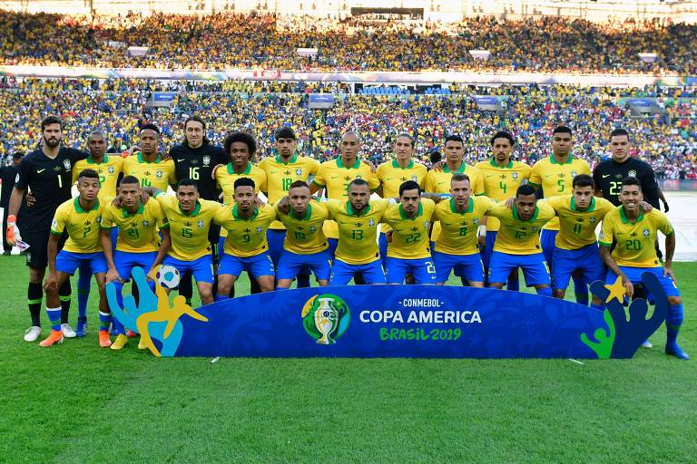

Pentacampeonato da Seleção Brasileira (2002)
Copa do Mundo:
Campeão em 1958
Campeão em 1962
Campeão em 1970
Campeão em 1994
Campeão em 2002
Copa América:
Campeão em 1919
Campeão em 1922
Campeão em 1949
Campeão em 1989
Campeão em 1997
Campeão em 1999
Campeão em 2004
Campeão em 2007
Campeão em 2019

Seleção Brasileira Eneacampeã (2019)
Artilheiros:
5º: Zico (48 gols)
4º: Romário (55 gols)
3º: Ronaldo (62 gols)
2º: Pelé (77 gols)
1º: Neymar (79 gols)
Maior artilheiro da Seleção Brasileira (Neymar)